OPTIMISE MS is a system for recording data including demographics, clinical events, treatments and tests according to Clinical Data Interchange Standards Consortium (CDISC) standards for Multiple Sclerosis. OPTIMISE MS allows researchers to better monitor MS patients’ progress, record outcomes and evaluate treatments.
The user can enter demographic, medical history and family medical history, clinical event, visit, test and treatment data.
OPTIMISE MS can be used in two modes; the offline mode when networking is enabled and the online mode when networking is disabled.
This guide assumes that the OPTIMISE MS system has been successfully configured as described at Getting started. An administrator needs to be defined who can control permissions for data access and securely provide users with login details. The PC and login passwords should be kept securely.
Logging in
To start using the OPTIMISE MS portal, first open your favourite modern Browser.
Then, enter the hosting address in the address bar.
You should see the following screen.
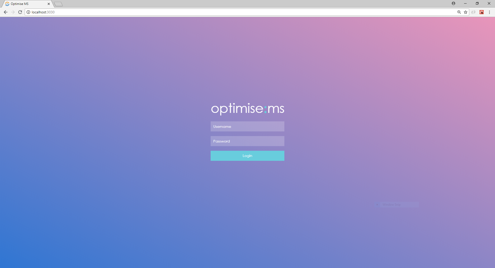Enter the user name and password (in the boxes as shown below) that were given to you and click the Login button. The default username is admin and the default password is admin.

If the log-in is unsuccessful, you will get a message as shown below. Re-enter user credentials and click Login.
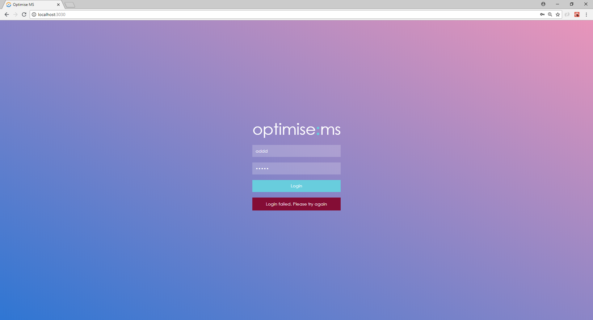If the log-in is successful, you should see the following screen.

Searching patients
You can search the database using the user-friendly search tool available after successful log-in.
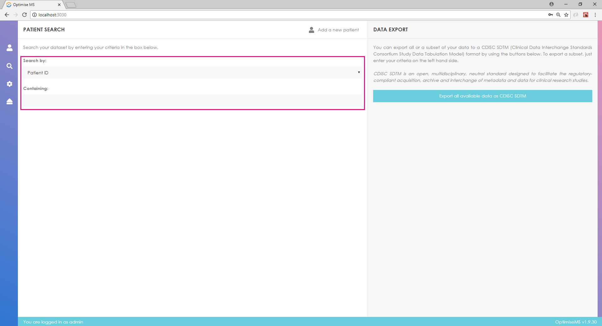To search by patient ID, select Patient ID from the drop-down list labelled as 'Search by:'.
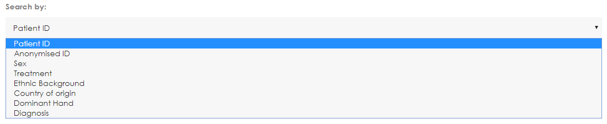Click on the box labelled 'Containing'- this is below the 'Search by' list- and enter the patient ID you want to search for.
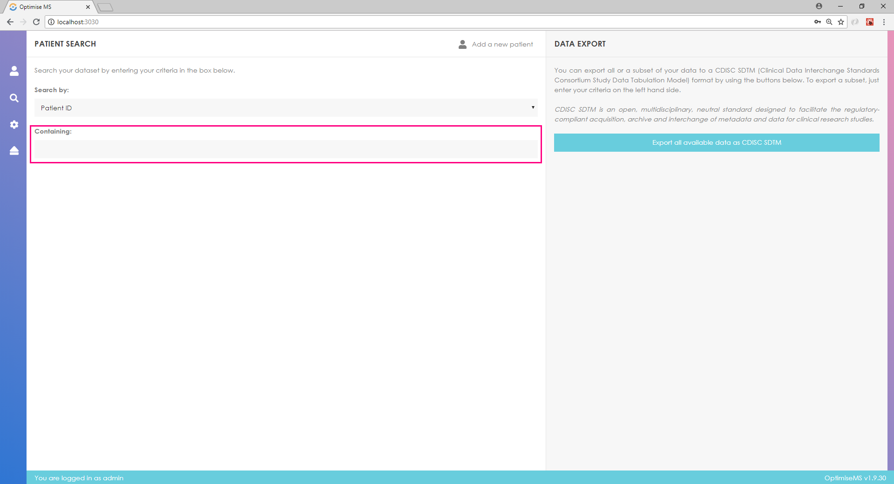The development team have assumed that an NHS ID will be used as patient ID to create, search and enter patient data. However, the software stores an independently generated, pseudonymised OPTIMISE ID along with the patient ID entered by the user at patient creation time.
The generated OPTIMISE ID is included in the exported data (more about the export in the section Exporting patient data). Search by this generated ID is also possible. Select Anonymised ID from the drop-down 'Search by' list and enter the ID you see in the exported files in the 'Containing' box. This allows retrieval of the patient ID- the patient ID is shown in the search results.
As you type in search value box ('Containing' box), the patients with ID that contain the text you entered will be shown in the area below the search box. Basic patient information for each listed ID is also shown. If no patients are listed, then there are no patients with that ID already in the database. You can begin to enter data for a new patient, by entering the ID- please see the section Creating a new patient.
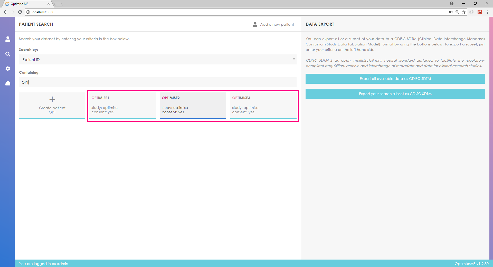Search by fields other than Patient ID and Anonymised ID (generated OPTIMISE ID) is also available. The example below refers to a search by country of origin with search value 'Canada'. The search results include two patients; patients with IDs OPTIMISE1 and OPTIMISE2.
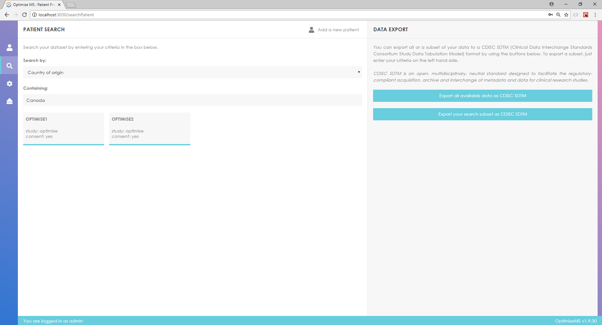Choose from the list of patient IDs below the search box by clicking on the patient box. To view and/or enter data for patient with ID OPTIMISE1, for example, click on the respective box (highlighted).

The timeline and a summary of the patient's Medical History will be available in the left panel. An overview that includes the patient profile, the primary diagnosis and other sections is available in the right panel. You may add, edit, or delete data for these sections as described in Entering patient data.

To exit the patient's (here, OPTIMISE1) records and return to the Patient Search page where you can search and create patients, click on X.
This is located near the top centre of the page as shown below.

Creating a new patient
To create a new patient, select Patient ID as the search field list and enter the patient ID in the search value box. If there are no patients with the entered ID, you may create a new patient by clicking the button
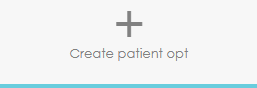
Once you click the Create button, you should fill the new patient profile form in the right panel that includes the patient consent status. You need to set the consent status for patient data sharing to Yes or No at this stage.

Complete the form (the option Unknown may be selected where appropriate), scroll down to the end of the form and click Submit to create the patient. To cancel the patient creation, click on X at the top right corner of the screen.

A warning message will be shown if any of the fields are empty or unselected when you click Submit. All the fields in this form are required in order to add the patient to the system. If you see the following message, please ensure the new patient profile form is completed before clicking Submit.
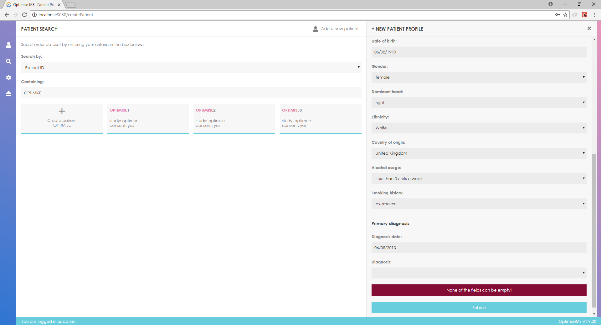If the patient creation is successful, you should see the following page. Please note that a few fields are conditional on the patient profile (Pregnancy, for example, is conditional on sex) and may be unavailable to some patients.

At any point you can return to the patient search page by clicking on X near the top centre of the screen highlighted below.

Updating patient consent
OPTIMISE MS is intended to be used after consent is given by patients to hold their data outside of a hospital or clinic IT system. The clinical user of OPTIMISE MS must indicate that appropriate consent has been given.
You may update the patient consent status at any time. Go to the main patient profile page and use the highlighted control in the right panel to set the status of patient consent.
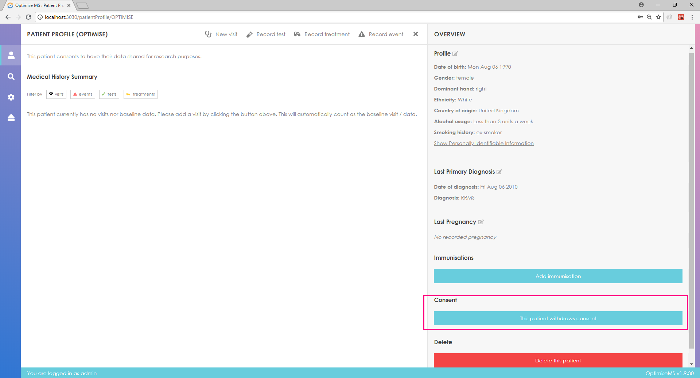The current patient consent status is always visible on screen. Clicking the consent button in the right panel updates this label accordingly.

Deleting a patient
Administrator users may need to remove a patient from the database (i.e. Right to be forgotten). To delete a patient click on 'Delete this patient' in the right panel. Please note this is only available to administrator users.

Click on YES, I AM SURE! to confirm the deletion or click X at top right corner of the pop-up message box to cancel.
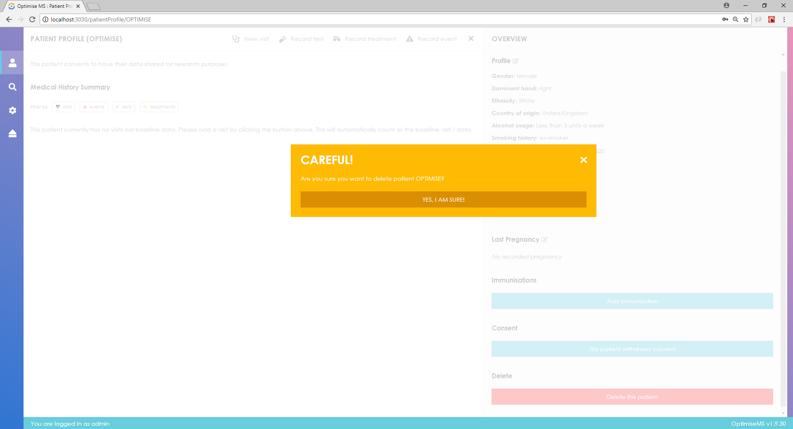Entering patient data
The Profile section in the Overview panel contains the profile data entered during patient creation. To edit the Profile section, click the button
 next to Profile.
next to Profile.
Edit the Patient Demographics form as necessary and click Submit to save the changes or X to return to the Overview panel.

Similarly, the Primary Diagnosis section in the Overview panel contains the diagnosis data entered during the creation of the patient. To edit this, click next to Primary Diagnosis.
Edit the form as necessary and click Submit to save the changes or X to return to the Overview panel.

To enter Immunisation data, click on

Enter data in the highlighted form shown below. Click Submit to add the new immunisation or Cancel.

To enter Pregnancy data, click on


Fill in the form. Click Submit to record the pregnancy or Cancel.

Immunisation and Pregnancy data will be added to the Overview panel as shown below. To remove an Immunisation entry, click  next to that particular entry. To remove a Pregnancy record, click Delete this record below the entry.
next to that particular entry. To remove a Pregnancy record, click Delete this record below the entry.

The filtering tool in the Medical History Summary allows you to select which medical elements are included in this section. This is especially useful for patients with considerable amount of recorded data. To include Treatments and Tests only, click on the respective buttons.
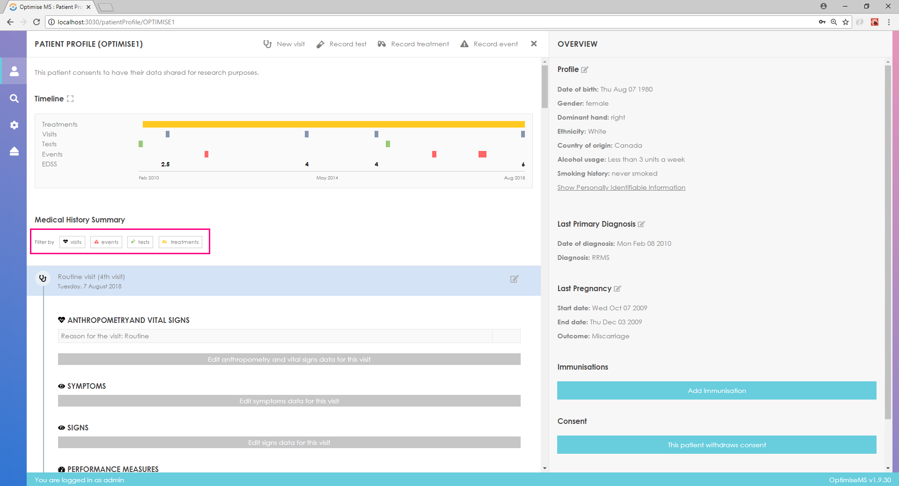Each clinical consultation is represented as a Visit in OPTIMISE MS. A “Baseline Visit” would usually refer to the first visit to the clinical site or consultant responsible for the database.
Click on to create a new visit for the patient.

Fill the form in the right panel. Systolic and diastolic blood pressure as well as heart rate are required fields. Click Submit to save the visit data or click X at the top right corner to return to the patient Overview without saving the visit data.

If the visit is successfully created, it will be added to the Medical History Summary in the main panel and to the Timeline. Baseline visits are labelled as such.

Symptoms and Signs are recorded only at a high level in the OPTIMISE MS database in an attempt to maximise the efficiency of their recording in the clinic and thus encourage their completeness. Symptoms reported by the patient and Signs observed by the neurologist are recorded separately.
Click on 'Edit symptoms data for this visit' or 'Edit signs data for this visit' buttons to enter Symptoms or Signs, respectively, elicited at the visit. For baseline visits, these will be labelled as 'First symptoms/signs indicating MS'. For non-baseline clinical visits, they will be labelled simply as Symptoms/Signs.

Enter any present symptoms by clicking on the buttons or selecting a value from the drop-down lists in the right panel form. For example, the neurologist might have observed fatigue for the patient. Scroll down to the end of the form and click Save. To exit the form and return to the Patient Overview, click X at the top right corner. The form can be edited at a later time.
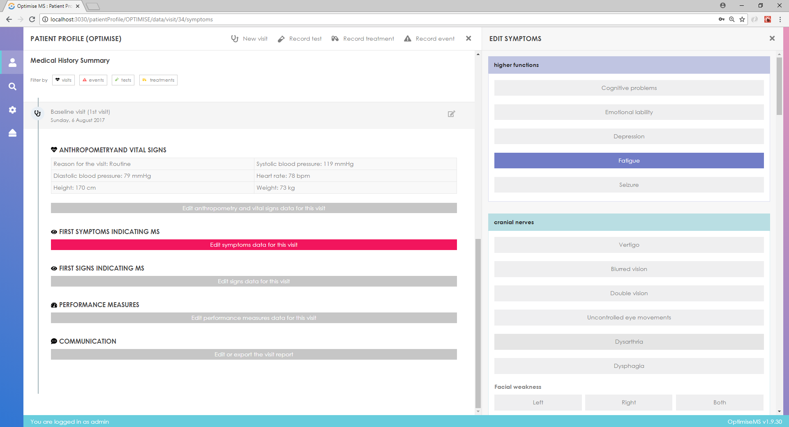Similarly, enter any signs by filling and saving the Signs form in the right panel. As an example, the patient might have shown evidence for cognitive dysfunction with impairment of memory and had reduced sensitivity to the colour red with the left eye.
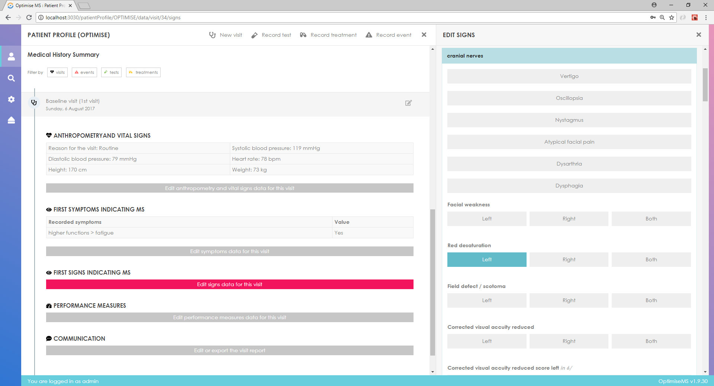Click on 'Edit performance measures data for this visit' to enter Performance Measures data.

The EDSS can be entered in two ways; the neurologist’s estimated EDSS or the calculated EDSS. The neurologist’s estimated EDSS score can be entered in the highlighted box in the right panel form.
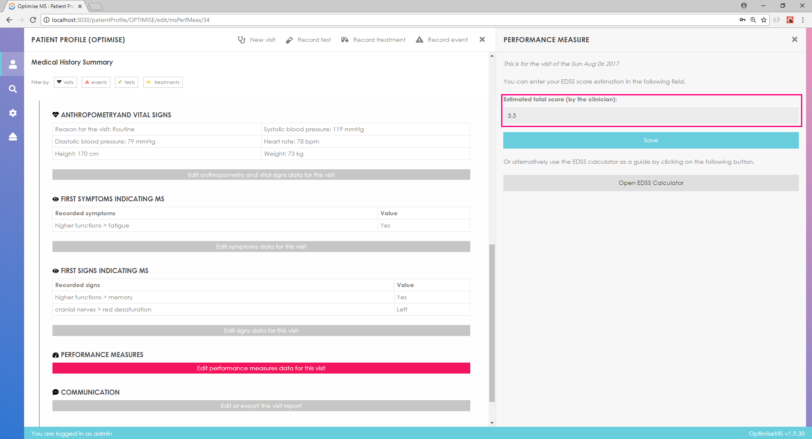Click Save for this estimated EDSS to be recorded. In addition, or alternatively, the functional systems can be scored separately and the total EDSS can be calculated by clicking on Open EDSS Calculator.
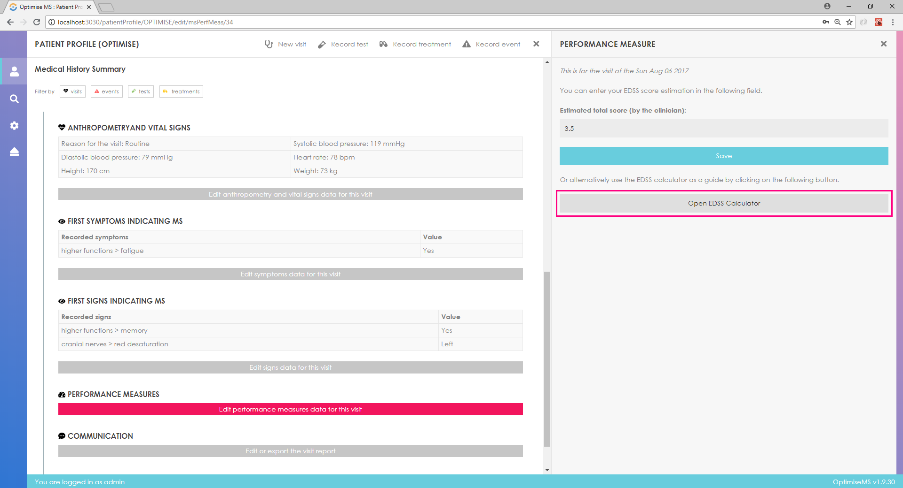For this, select a score for each EDSS subcategory. Hover over a score button to see the respective score description highlighted. The calculated total score will be shown in the Calculated score box. Note that an Ambulation score is required for the functional scores to be saved. Click Save to record the scores and then X to exit the calculator. To exit Performance Measuresand return to the Patient Overview, click on X at the top right corner of the EDSS form.

The EDSS Total and EDSS Subscores will be listed under Performance Measures in the Medical History Summary.

OPTIMISE MS supports the generation of a free-text visit report, called a Communication. This can be exported as a .txt file. You may also copy and paste the entered text directly in a document such as a clinic letter generated by other software.
Click on 'Edit or export the visit report' to edit or export a Communication for the visit.
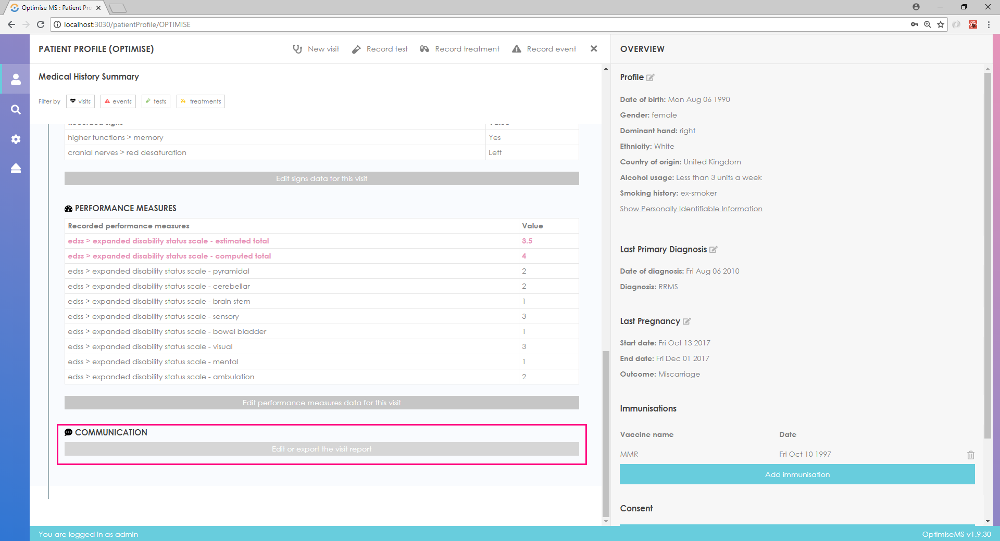Specific field data entered for the patient from a visit can be added automatically to the Communication by selecting the appropriate buttons above the text area.
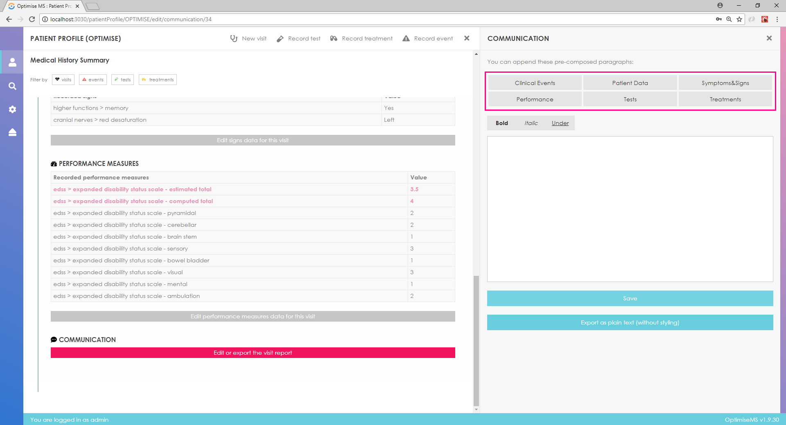Click on the buttons to add the respective recorded data to the report. You may format the text using the available formatting tools. The report can be updated at a later time to include data entered after its creation.
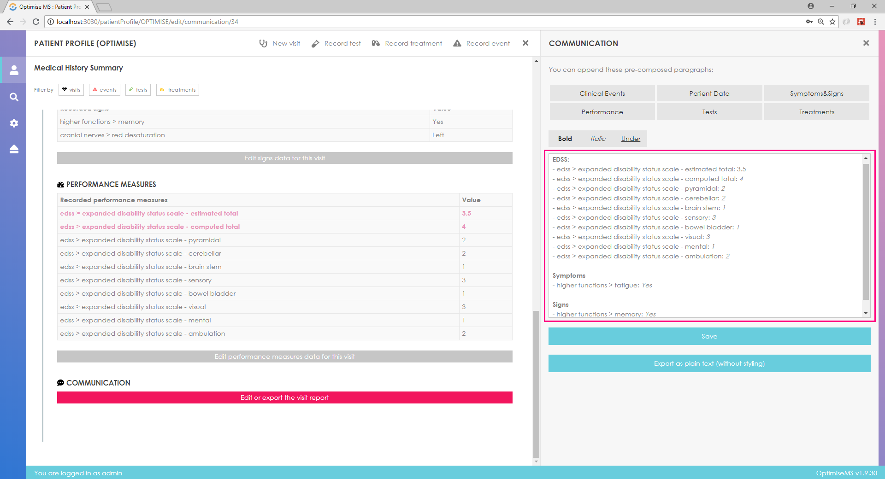For Clinical Events, Tests and Treatments, the time period to cover can be specified using the drop-down list. The default behaviour is to include observations/records of the last month. Select a different option from the list and click Add to update the report accordingly. Click the Save or Export button or X to return to the Patient Overview.
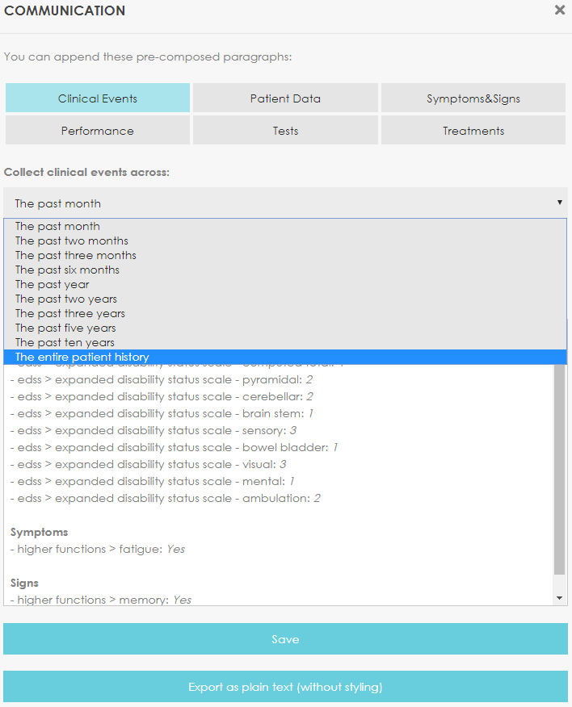Click on to create a record for a new test for the patient.

Select the expected or actual date for the test, the type of test (Lumbar Puncture is selected below) and click Submit to create the new test. Click X to cancel and return to the Patient Overview.

If the test is successfully created, it will be added to the Medical History Summary in the main panel as shown below. The test is also shown on the Timeline (green symbol) above the Medical History Summary.

Click on Results to enter further data for the test.
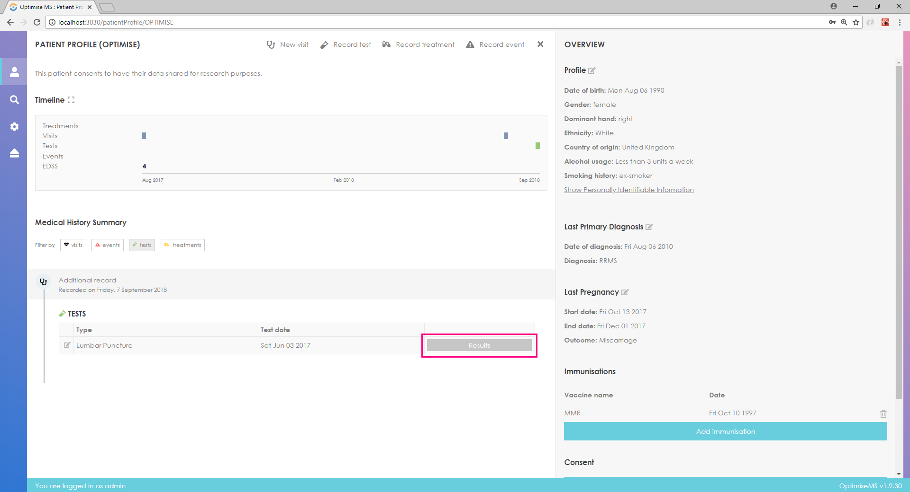Complete the form in the right panel. Click Save to record the test results or click X to cancel and return to the Patient Overview.
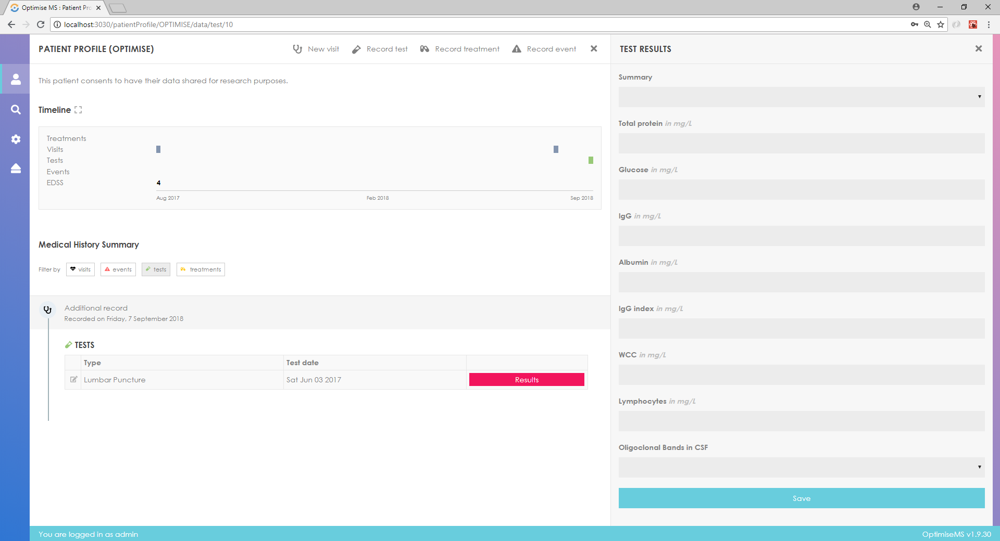Laboratory tests refer to blood or CSF tests only, e.g. total WBC, bilirubin and specific anti-body titres. After entering test results for a given reporting date, scroll down to the end of the page and click Save. Click X to return to the Patient Overview.
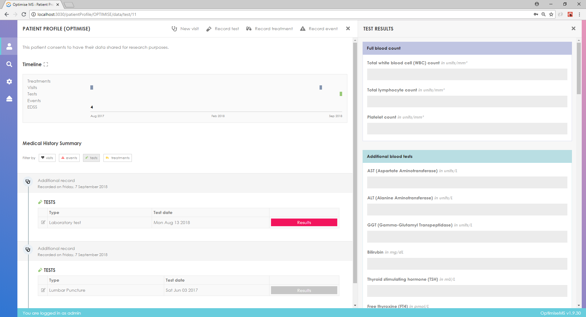Currently, only data concerning the presence or absence of T1 Hypointense Lesions and number of T2 Hyperintense Lesions and gadolinium (Gd) contrast enhancing lesions can be entered into the OPTIMISE MS database. The fields for an MRI test type are shown below.
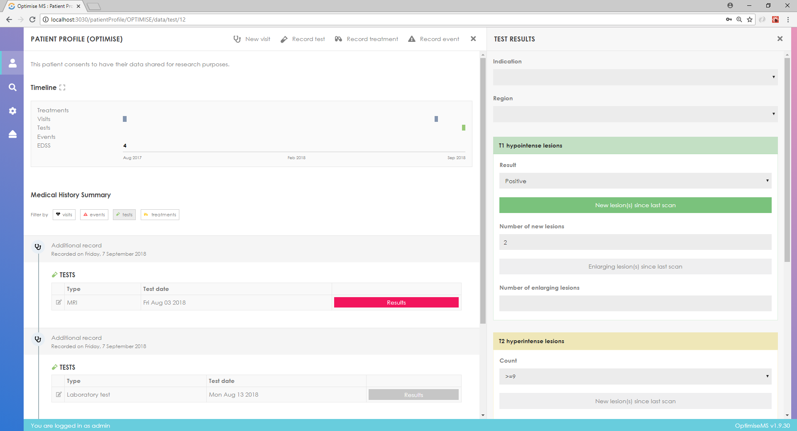The Evoked Potential test section allows recording of the P100 Visual Evoked Potential amplitude and latency. Sensory Evoked Potentials (SEP) with stimulation in the limbs are recorded if Abnormal.
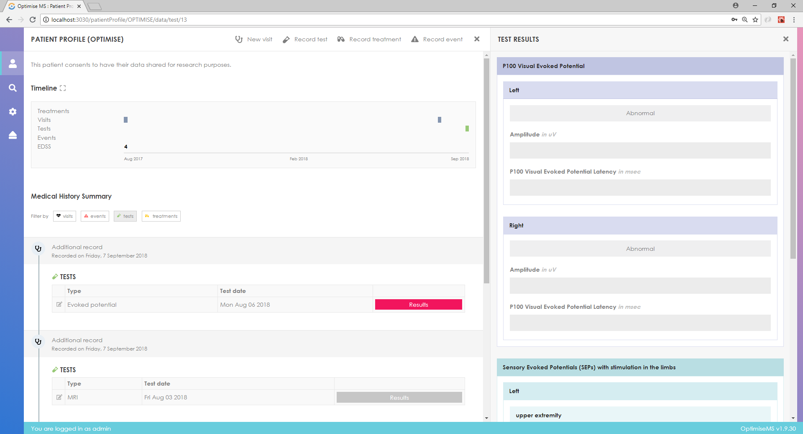Click on to enter treatment data.

Fill in the treatment form in the right panel. Click Submit to record the treatment or X to cancel and return to the Patient Overview. A warning message will be shown if required fields are not filled.

Unticking the box labelled 'The treatment is ongoing' allows you to record a treatment discontinuation by entering the treatment end date.
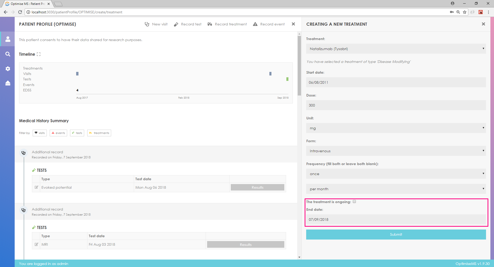Any new treatment recorded is added to the Medical History Summary and the Timeline (yellow symbol) as shown below.

To record any interruptions to a treatment, click on Interruptions and then Add interruptions in the right panel.
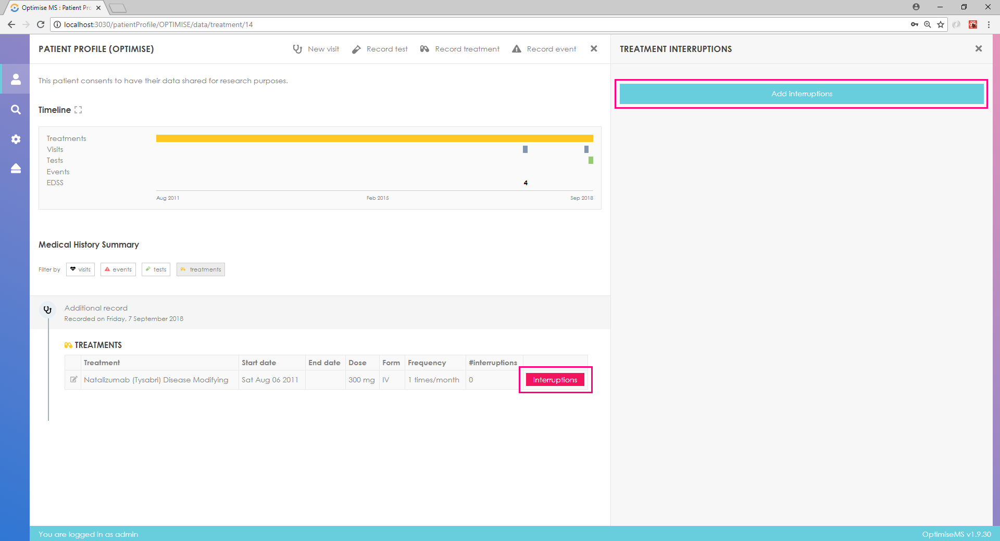Record the Reason for the Interruption from the drop-down menu. If the interruption is related to an adverse event, the next section for Adverse Events should be clicked open. A drop-down list of adverse events defined by the Medical Dictional for Regulatory Activities (MedDRA, see https://www.meddra.org/) is available. Start typing in the input box and follow the expanding tree of terms in the drop-down table to identify the specific adverse event. Note, however, that as MedDRA coding is subject to license, the full tree is not available on this openly downloadable version of OPTIMISE MS.
Complete the form and click on Submit to add the interruption details. Click the Cancel button or on X to exit the interruptions section and return to the Patient Overview.
Clinical Events allow entry of data concerning relapses and other clinically relevant changes or adverse events including infections, opportunistic infections, death and other SAE likely related to treatment or malignancies.
Click on 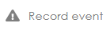 to record a new clinical event.

Fill in the form in the right panel and click Submit to add the event or X to exit without saving and return to the Patient Overview.

The event will be added to the Medical History Summary and to the Timeline (red symbol).
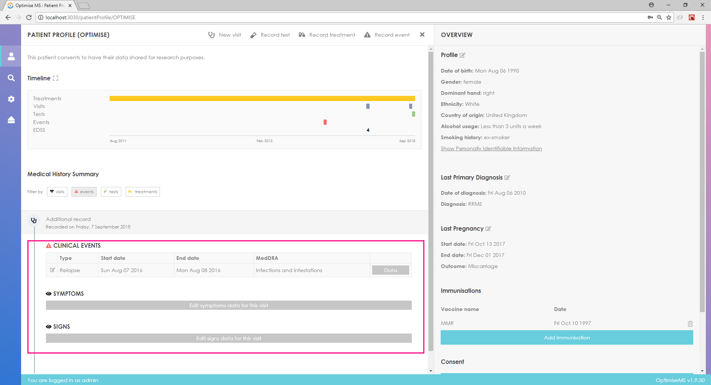To further describe the clinical event click on Data.
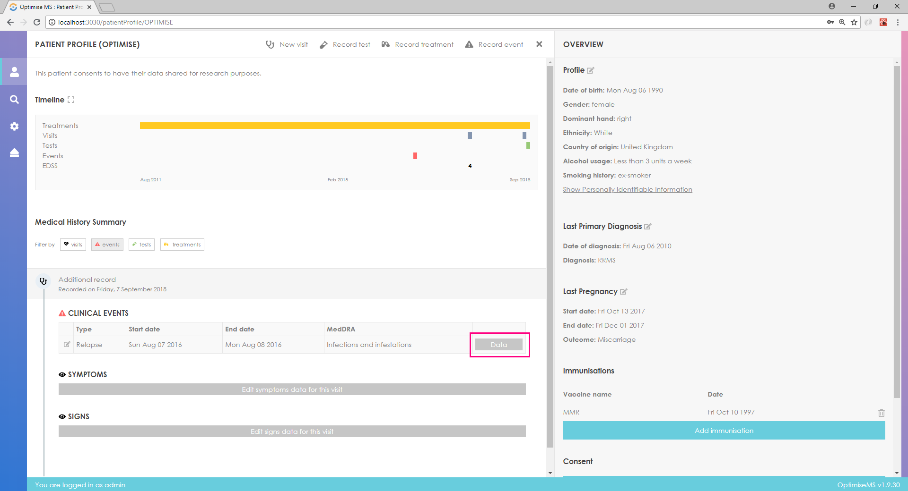Select the functional systems affected by clicking on the buttons, fill in the rest of the form as necessary, click Save and then X to exit. Click X before clicking Save to cancel the data entry.

The data fields for Infections and Opportunistic Infections are shown below.

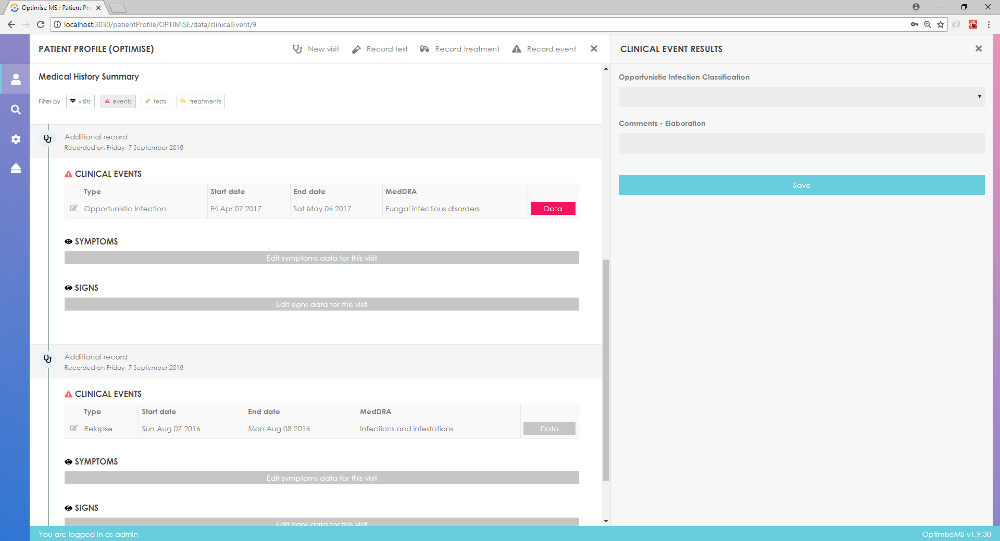
Test, medication and clinical event data can be edited at any time by clicking the highlighted buttons in the Medical History Summary and following the steps described above.
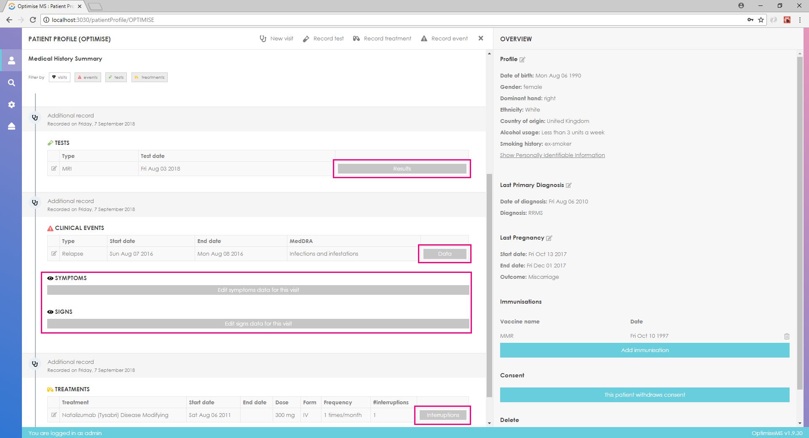To edit data about concerning tests, treatments and clinical events such as dates or type or to delete these entries, click on as shown below. Click on one of the buttons in the right panel to edit or delete the entry. The informative labels in the right panel will indicate which actions and modifications are allowed.
Using the Timeline
You may click on the coloured shapes on the Timeline to access (view/edit) the corresponding entry in Medical History Summary.

Click on  next to Timeline to maximise the timeline.
next to Timeline to maximise the timeline.

Follow the instructions below the timeline to interact with it. Zooming in and zooming out as well as navigation to a specific time period are available. The timeline shows Treatments, (Clinical) Visits, Tests, Clinical Events and EDSS using different colouring. Click X to return to the Patient Overview.
Exporting patient data
OPTIMISE MS currently supports the export of patient data in JSON and CSV files. This is available in the right panel on the Patient Search page.

In order to export the database as JSON and CSV files, click on the export button (highlighted) and choose where to save the ZIP folder which you can then extract. You may want to change the name of this folder- the default is attachment.zip. Please note that any Patient Identifiable Information is excluded from the generated JSON and CSV files by default.
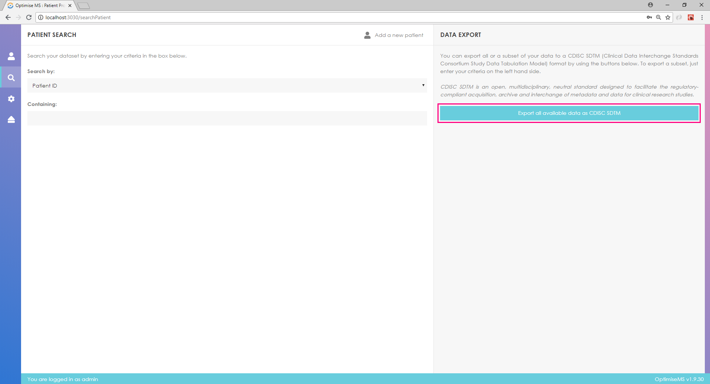The patient ID used to create a new patient is not included in any of the output files. The column USUBJID (Unique Subject Identifier) in the exported treatment data CSV file stores the anonymised OPTIMISE ID.

Admin menu
Each installation of OPTIMISE MS should have an identified administrator who manages OPTIMISE MS. The administrator can create and delete user accounts, view the action log, where all user actions are recorded, and read messages about the software (e.g. the OPTIMISE MS software version) by accessing the Admin Menu.
The administrator can click on the button located in the left panel as shown below to access the Admin Menu. Note that this is only available to users with administrator rights.

The administrator can manage the users (create and delete user accounts) by accessing the relevant option (Manage users) in Admin menu. In order to update or delete a user account, click on the respective entry in the list of registered user accounts in the middle panel.
To update the password for a particular user, select the user from the list, fill in the form as shown below and click Submit. Click Cancel to cancel the update.

To delete a user, select from the users list and click on Delete.
A warning message will appear. Click X to cancel the deletion or YES, I AM SURE! to confirm the deletion.
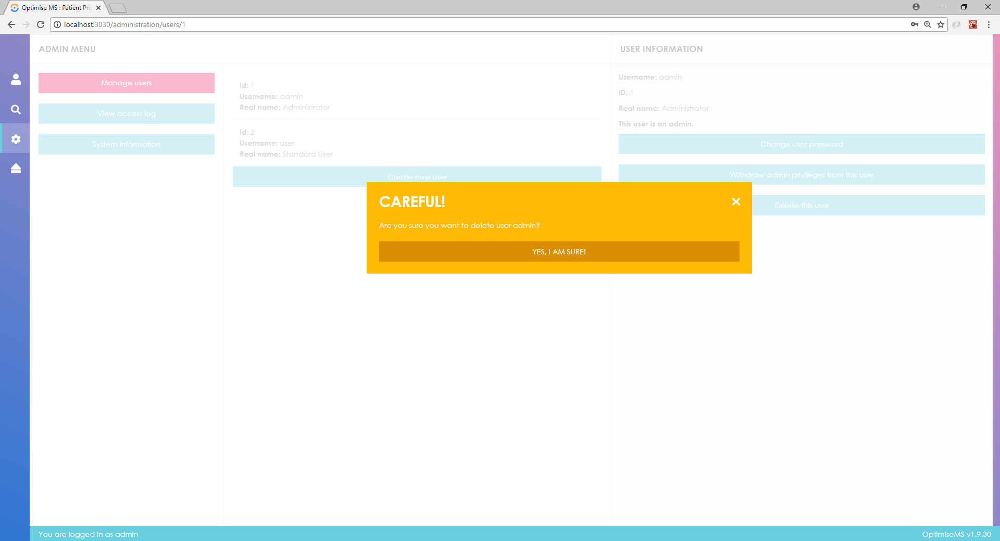You may create a new user account by clicking on the Create a new user button.
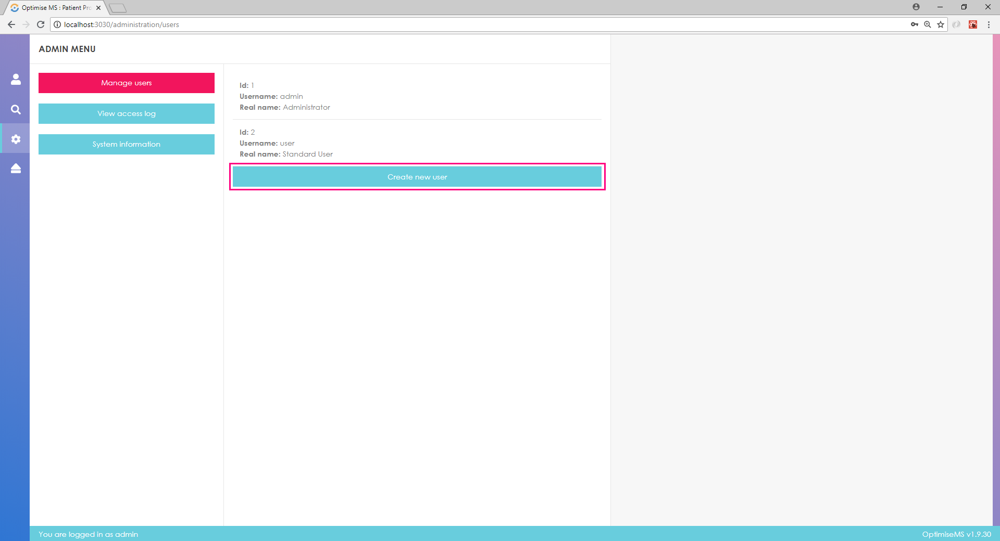Fill in the highlighted form and click Submit.
The following error message is shown if the submitted form is incomplete. Please complete all fields and re-submit.

The action log shows a detailed description of all the actions performed by users.

System information is also available in the Admin Menu.
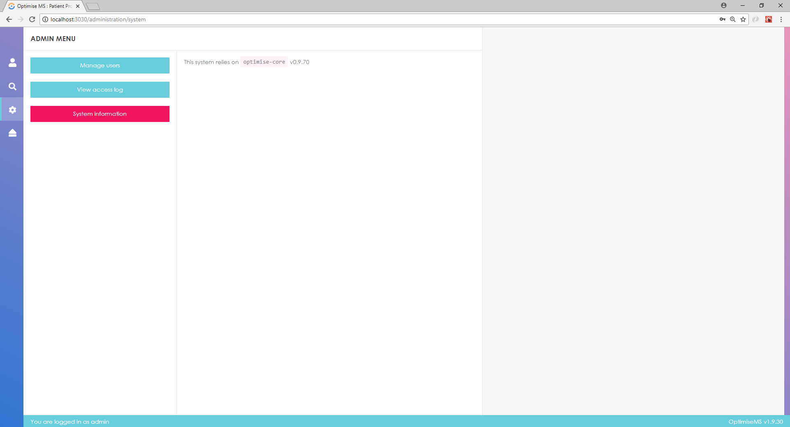Logging out
To log out click on the logout button.
This is located in the panel on the left of the page as shown below.
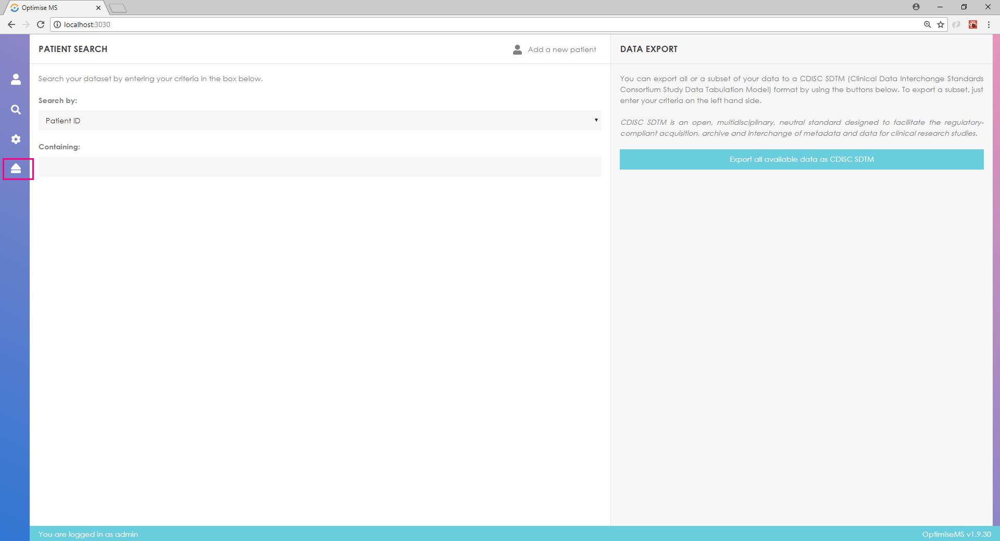